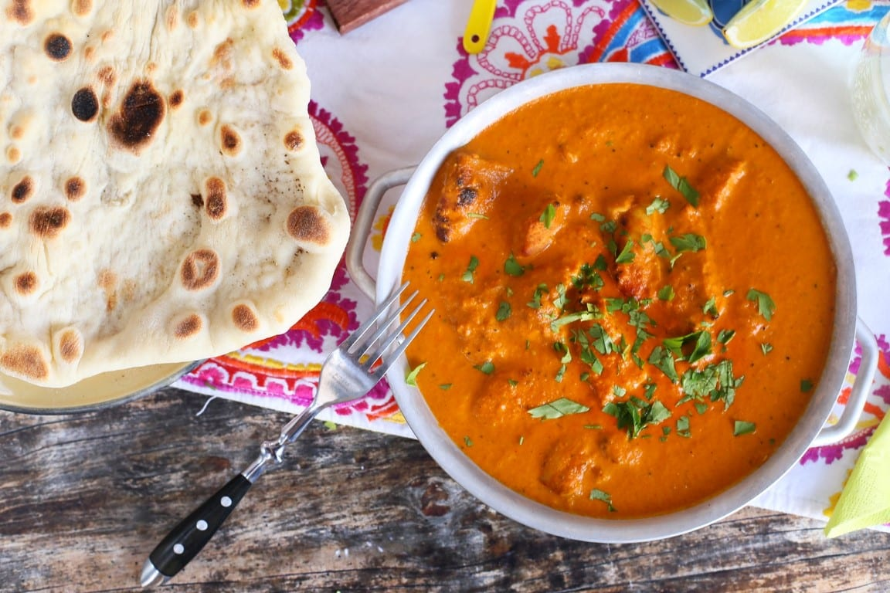
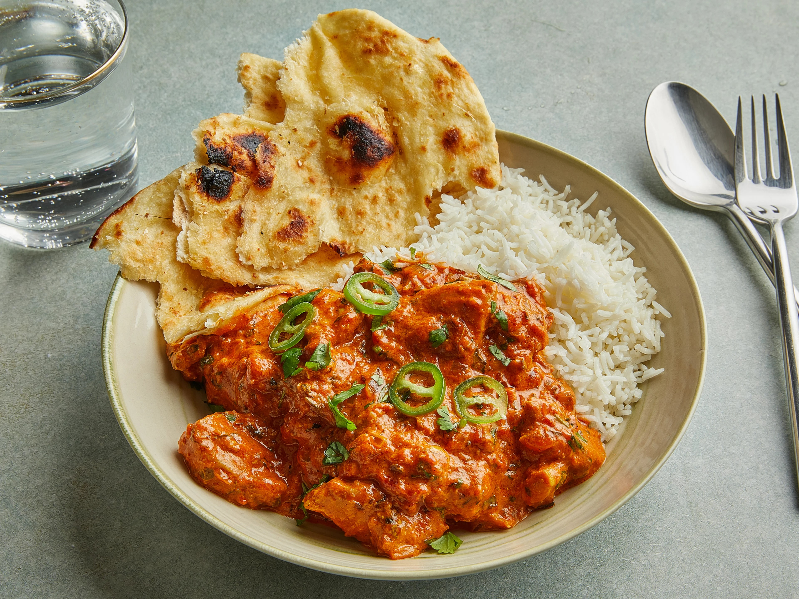

Csirke tikka masala
Krémes paradicsomos szószban párolt fűszeres csirkekockák, amelyeket gyakran naan kenyérrel vagy rizzsel tálalnak.

Hozzávalók (4 adag)
A pác:
- 500 g csirkemell (kockákra vágva)
- 200 g joghurt (natúr)
- 2 gerezd fokhagyma (zúzva)
- 1 evőkanál frissen reszelt gyömbér
- 1 teáskanál őrölt koriander/li>
- 1 teáskanál őrölt római kömény
- 1 teáskanál őrölt paprika
- 1/2 teáskanál kurkuma
- 1/2 teáskanál chili (ízlés szerint)
- 1 evőkanál citromlé
- Só ízlés szerint
A szósz:
- 2 evőkanál olaj vagy vaj
- 1 fej vöröshagyma (aprítva)
- 2 gerezd fokhagyma (zúzva)
- 1 evőkanál frissen reszelt gyömbér
- 400 g konzerv darabolt paradicsom
- 200 ml kókusztej vagy tejszín
- 1 teáskanál garam masala
- 1 teáskanál őrölt koriander
- 1 teáskanál őrölt római kömény
- 1 teáskanál őrölt paprika
- Só és bors ízlés szerint
- Friss korianderlevél a tálaláshoz
Elkészítés
-
A pácolás
- A csirkemellet keverd össze a joghurttal, fokhagymával, gyömbérrel, fűszerekkel és citromlével
- Fedd le, és tedd hűtőbe legalább 2 órára (de legjobb egy éjszakára).
-
A csirke sütése:
- Melegítsd elő a sütőt 200°C-ra, és helyezd a bepácolt csirkedarabokat sütőpapírral bélelt tepsire.
- Süsd 15-20 percig, amíg a csirke aranybarna nem lesz. (Alternatívaként serpenyőben is megsütheted a csirkét.)
-
A szósz elkészítése:
- Melegítsd fel az olajat vagy vajat egy serpenyőben.
- Pirítsd meg a hagymát, fokhagymát és gyömbért, amíg illatos nem lesz.
- Add hozzá a fűszereket (garam masala, koriander, római kömény, paprika), és pirítsd még 1-2 percig.
- Keverd hozzá a paradicsomot, majd főzd közepes lángon 10-15 percig, hogy besűrűsödjön.
- Add hozzá a kókusztejet vagy tejszínt, és keverd simára.
-
A csirke és a szósz összeállítása:
- Tedd bele a sült csirkedarabokat a szószba, és hagyd, hogy 5-10 percig együtt főjenek, hogy az ízek összeérjenek.
-
Tálalás:
- Friss korianderrel díszítsd, és tálald basmati rizzsel vagy naan kenyérrel.
Butter chicken (vajban sült csirke)
Egy lágy, vajas-paradicsomos szószban párolt csirkefalatok, melyek gazdag fűszerekkel készülnek.

Hozzávalók (4 adaghoz)
Marinádhoz:
- 500 g csirkemell vagy csirkecomb filé, kockára vágva
- 1 pohár natúr joghurt
- 1 evőkanál citromlé
- 2 teáskanál gyömbér-fokhagyma paszta
- 1 teáskanál őrölt koriander
- 1 teáskanál garam masala
- 1 teáskanál őrölt kurkuma
- 1 teáskanál chili por (ízlés szerint)
- Ízlés szerint só
A szószhoz:
- 3 evőkanál vaj
- 1 nagy vöröshagyma, apróra vágva
- 2 gerezd fokhagyma, apróra vágva
- 1 evőkanál gyömbér, reszelve
- 400 g hámozott konzerv paradicsom vagy 4 friss paradicsom, pürésítve
- 1 teáskanál őrölt kömény
- 1 teáskanál őrölt koriander
- 1 teáskanál garam masala
- 1 teáskanál cukor (opcionális)
- 200 ml tejszín
- Ízlés szerint só
- Friss koriander, díszítéshez
Elkészítés
-
Marinád elkészítése:
- Egy nagy tálban keverd össze a joghurtot, citromlevet, gyömbér-fokhagyma pasztát és a fűszereket.
- Add hozzá a csirkedarabokat, és alaposan forgasd meg, hogy mindenhol bevonja a fűszeres joghurt.
- Fedd le, és hagyd pihenni a hűtőben legalább 1 órán át (de még jobb, ha egy éjszakán át pácolódik).
-
A csirke megsütése:
- Egy serpenyőben melegíts egy kevés vajat vagy olajat, majd süsd meg a marinált csirkedarabokat közepes lángon, amíg barnás-piros színt kapnak (nem kell teljesen átsülni, mert a szószban tovább fő).
- Tedd félre a csirkedarabokat.
-
A szósz elkészítése:
- Ugyanabban a serpenyőben olvaszd fel a vajat, majd dinszteld meg az apróra vágott hagymát, amíg aranybarna lesz.
- Add hozzá a fokhagymát és a gyömbért, és párold további 1-2 percig.
- Öntsd hozzá a paradicsompürét, majd add hozzá a köményt, koriandert, garam masalát, és ízlés szerint sót.
- Főzd 10-15 percig, amíg a paradicsomszósz besűrűsödik, és az olaj kezd elválni a szósztól.
- Öntsd hozzá a tejszínt, keverd össze, és ízlés szerint adj hozzá egy kevés cukrot, hogy kiegyensúlyozd az ízeket.
-
Összeállítás:
- Tedd vissza a megsült csirkedarabokat a szószba, és főzd alacsony lángon további 10-15 percig, amíg a csirke teljesen átfő.
- Kóstold meg, és szükség esetén igazítsd az ízeket.
-
Tálalás:
- Tálald melegen, friss korianderrel megszórva. Kiválóan illik mellé frissen sült naan kenyér, basmati rizs vagy chapati.
Vegetáriánus samosa
Ropogós tésztabatyuk, burgonya, borsó és fűszerek keverékével töltve, melyeket gyakran tamarindos vagy mentás mártással kínálnak.
Hozzávalók (4 adaghoz)
A tésztához:
- 2 csésze liszt
- 1/2 teáskanál só
- 3 evőkanál olaj vagy ghee
- 1/2 csésze víz (vagy amennyire szükség van a tészta összeállításához)
Töltelékhez:
- 3 közepes burgonya, megfőzve és összetörve
- 1/2 csésze zöldborsó (friss vagy fagyasztott)
- 1 evőkanál olaj
- 1 teáskanál köménymag
- 1 teáskanál őrölt koriander
- 1 teáskanál garam masala
- 1/2 teáskanál kurkuma
- 1/2 teáskanál chili por (ízlés szerint)
- 2 evőkanál friss koriander, apróra vágva
- Ízlés szerint só
A sütéshez:
Elkészítés
-
Tészta elkészítése:
- Egy tálban keverd össze a lisztet és a sót.
- Add hozzá az olajat vagy gheét, és morzsold el a liszttel.
- Fokozatosan adj hozzá vizet, amíg sima, rugalmas tésztát kapsz.
- Takarva hagyd pihenni 30 percig.
-
Töltelék elkészítése:
- Hevíts olajat egy serpenyőben, és add hozzá a köménymagot.
- Pirítsd meg, amíg illatos lesz, majd add hozzá a zöldborsót és a fűszereket (koriander, garam masala, kurkuma, chili).
- Add hozzá a tört burgonyát, sózd meg, és jól keverd össze.
- Hagyd kihűlni a tölteléket.
-
Samosák formázása:
- Oszd a tésztát kisebb golyókra, és nyújtsd ki vékony kör alakúra.
- Vágd félbe a köröket, és a félkörökből formázz tölcsért.
- Töltsd meg a tölcséreket a burgonyás keverékkel, majd zárd le a széleket, hogy háromszög alakú samosát kapj.
-
Sütés:
- Hevíts olajat egy mély serpenyőben vagy fritőzben.
- Süsd a samosákat közepes lángon, amíg aranybarnák és ropogósak lesznek.
- Csepegtesd le papírtörlőn.
-
Tálalás:
- Tálald a samosákat melegen mentás joghurttal, tamarind szószal vagy más kedvenc mártogatóval.